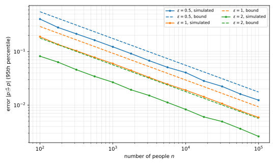

3 Randomized Response and the Definition
A group of people each hold one sensitive bit, and an analyst wants the fraction of ones without learning anyone’s bit. This chapter solves that problem with a biased coin, the oldest private algorithm, and then turns the idea behind it, plausible deniability, into a definition. The definition is differential privacy (DP), and the rest of the book is built on it.
3.1 Randomized response
Write \(n\) for the number of people. Person number \(i\) holds a bit \(x_i \in \{0,1\}\), for instance whether they cheated on an exam, and the analyst wants the fraction of ones,
\[ p = \frac{1}{n}\sum_{i=1}^n x_i . \tag{3.1}\]
Each person sends the analyst one message \(Y_i\), which may depend on \(x_i\) and on coins that only person \(i\) sees. Two extreme protocols frame the problem. If \(Y_i = x_i\) with probability \(1\), the analyst computes \(p\) exactly but sees every bit, so there is no privacy. If \(Y_i = x_i\) with probability \(1/2\) and \(1 - x_i\) otherwise, then \(Y_i\) is a fair coin independent of \(x_i\). The analyst learns nothing about anyone, and nothing about \(p\) either, since the average of the reports is distributed as \(\frac1n\mathrm{Bin}(n, \frac12)\) whatever the data. Randomized response interpolates between the two.
Definition 3.1 (Randomized response) For a bias \(\kappa \in [0, 1/2]\), which sets the probability \(\tfrac12 + \kappa\) of reporting the truth, person \(i\) reports
\[ Y_i = \begin{cases} x_i & \text{with probability } \tfrac12 + \kappa, \\ 1 - x_i & \text{with probability } \tfrac12 - \kappa, \end{cases} \tag{3.2}\]
with fresh, independent coins for each person.
The value \(\kappa = 1/2\) is the honest protocol and \(\kappa = 0\) is the fair coin. In between, say at \(\kappa = 1/4\), a person who reports \(Y_i = 1\) can claim that their bit was \(0\) and the coin flipped it, which happens with probability \(1/4\). That plausible deniability is the privacy, and it grows as \(\kappa\) shrinks.
The reports are biased towards the truth, so their average is not \(p\). The bias is known, though, and the analyst can undo it. The average of one report is
\[ \mathbb E[Y_i] = \left(\tfrac12+\kappa\right)x_i + \left(\tfrac12-\kappa\right)(1-x_i) = 2\kappa x_i + \tfrac12 - \kappa , \tag{3.3}\]
which is linear in \(x_i\). Solving for \(x_i\) gives an unbiased estimate of each bit, and averaging those estimates gives the estimator of \(p\).
Definition 3.2 (Debiased estimator) For \(\kappa > 0\), the analyst outputs
\[ \tilde p = \frac1n \sum_{i=1}^n \frac{Y_i - \tfrac12 + \kappa}{2\kappa}. \tag{3.4}\]
The next theorem checks that the estimator is right on average and measures how far it typically strays, through its variance.
Theorem 3.1 For every \(\kappa \in (0, 1/2]\) and every input \(D \in \{0,1\}^n\), the estimator is unbiased, \(\mathbb E[\tilde p] = p\), and its variance is
\[ \operatorname{Var}(\tilde p) = \frac{1 - 4\kappa^2}{16\kappa^2 n} \le \frac{1}{16\kappa^2 n}. \tag{3.5}\]
Proof.
- Each term \(Z_i = (Y_i - \tfrac12 + \kappa)/(2\kappa)\) has mean \(x_i\), by the formula for \(\mathbb E[Y_i]\) above. Averaging over \(i\) and using linearity of expectation gives \(\mathbb E[\tilde p] = p\).
- The constants \(\tfrac12 - \kappa\) and \(2\kappa\) do not change the variance except through the scaling, so \(\operatorname{Var}(Z_i) = \operatorname{Var}(Y_i)/(4\kappa^2)\).
- The report \(Y_i\) is a Bernoulli variable that equals \(1\) with probability \(\tfrac12 + \kappa\) or \(\tfrac12 - \kappa\), depending on \(x_i\). In both cases its variance is \((\tfrac12+\kappa)(\tfrac12-\kappa) = \tfrac14 - \kappa^2\).
- The reports are independent because each person uses their own coins. So the variance of the sum is the sum of the variances, and
\[ \operatorname{Var}(\tilde p) = \frac{1}{n^2}\sum_{i=1}^n \frac{\operatorname{Var}(Y_i)}{4\kappa^2} = \frac{\tfrac14 - \kappa^2}{4\kappa^2 n} = \frac{1-4\kappa^2}{16\kappa^2 n}. \tag{3.6}\]
Chebyshev’s inequality turns the variance into an error bar: with probability at least \(3/4\), the error is at most two standard deviations, \(|\tilde p - p| \le 1/(2\kappa\sqrt n)\). For a failure probability \(\beta\) that is small, Hoeffding’s inequality does better, because each \(Z_i\) takes only two values.
Theorem 3.2 For every \(\kappa \in (0,1/2]\) and \(\beta \in (0,1)\), with probability at least \(1-\beta\) over the coins,
\[ |\tilde p - p| \le \frac{1}{2\kappa}\sqrt{\frac{\ln(2/\beta)}{2n}} . \tag{3.7}\]
Proof.
- The term \(Z_i\) takes the values \((\tfrac12+\kappa)/(2\kappa)\) and \(-(\tfrac12-\kappa)/(2\kappa)\), so it lies in an interval of length \(1/(2\kappa)\).
- The \(Z_i\) are independent with mean \(x_i\). Hoeffding’s inequality for the average of \(n\) independent variables, each in an interval of length \(\ell\), gives
\[ \Pr\left[\,|\tilde p - p| \ge t\,\right] \le 2\exp\!\left(-\frac{2nt^2}{\ell^2}\right) = 2\exp\!\left(-8\kappa^2 n t^2\right). \tag{3.8}\]
- Setting the right-hand side equal to \(\beta\) and solving for \(t\) gives Equation 3.7.
So the error is of order \(1/(\kappa\sqrt n)\), and it goes to \(0\) as \(n\) grows. Read the other way, an error of at most \(\alpha\) with probability \(1-\beta\) needs
\[ n \ge \frac{\ln(2/\beta)}{8\kappa^2\alpha^2} \tag{3.9}\]
people. A smaller \(\kappa\) hides each bit better and needs more people for the same accuracy. To say how much better a smaller \(\kappa\) hides a bit, we need a definition.
3.2 Differential privacy
In privacy, the first step is to fix the setting. Here it is the central model. Each of \(n\) people sends their data point to a trusted curator, whom they trust with it and trust no one else. The curator runs an algorithm \(M\) on the dataset \(D = (x_1, \dots, x_n) \in \mathcal X^n\) and publishes the output. Everything the curator publishes crosses a trust barrier, and anyone on the far side may be an adversary. The guarantee is a property of the algorithm, which in this field is called a mechanism. It says that no single person’s data has a large effect on the distribution of the output. To make “one person’s data” precise, compare two datasets that differ only in one person’s record.
Definition 3.3 (Neighbouring datasets) Two datasets \(D, D' \in \mathcal X^n\) are neighbours, written \(D \sim D'\), if they differ in exactly one record. This is the replace-one relation.
The definition asks that the distribution of the output barely change between neighbours. On every set of outputs, the probability may grow by at most a factor \(e^\varepsilon\), where the privacy parameter \(\varepsilon\) measures how much change is allowed.
Definition 3.4 (Differential privacy) Let \(\varepsilon \ge 0\). A randomized algorithm \(M \colon \mathcal X^n \to \mathcal Y\), which maps a dataset to an output in a set \(\mathcal Y\), is \(\varepsilon\)-differentially private (\(\varepsilon\)-DP) if for all neighbours \(D \sim D'\) and all events \(S \subseteq \mathcal Y\),
\[ \Pr[M(D) \in S] \le e^{\varepsilon}\, \Pr[M(D') \in S] . \tag{3.10}\]
The probability is over the coins of \(M\) only. The datasets are fixed.
This is sometimes called pure differential privacy, to set it apart from a relaxation in a later chapter. Four features of it matter later.
First, the definition is quantitative. At \(\varepsilon = 0\) the output distribution is the same on every dataset, which is perfect privacy and allows no accuracy. Any algorithm that is not randomized is \(\infty\)-DP, which is no guarantee at all. Values of \(\varepsilon\) between about \(0.1\) and \(5\) are typical, smaller is more private, and a claim far outside that range deserves suspicion. Because the bound is \(e^\varepsilon\), privacy weakens quickly once \(\varepsilon\) is above \(1\).
Second, it is a worst-case guarantee. It must hold for every pair of neighbours, however unlikely the data, and no distribution over datasets is assumed.
Third, it is symmetric. Swapping \(D\) and \(D'\) in Equation 3.10 gives the lower bound \(\Pr[M(D)\in S] \ge e^{-\varepsilon}\Pr[M(D')\in S]\).
Fourth, it bounds a ratio, not a difference. For small \(\varepsilon\) the factor \(e^\varepsilon\) is close to \(1 + \varepsilon\). The exponential form is chosen because factors multiply when guarantees are chained, \(e^{\varepsilon_1}e^{\varepsilon_2} = e^{\varepsilon_1+\varepsilon_2}\), which the next chapter uses for group privacy. An additive notion of closeness, such as a small total variation distance, sounds natural but gives no meaningful guarantee.
This notion of neighbours replaces one record, and differential privacy under it is also called bounded differential privacy. The add/remove relation, also called unbounded differential privacy, instead adds or removes one record. A replacement is a removal followed by an addition, so an algorithm that is \(\varepsilon\)-DP under add/remove neighbours is \(2\varepsilon\)-DP under replace-one neighbours, by the chaining argument of the next chapter’s group privacy. The converse can fail, because under add/remove neighbours the size \(n\) of the dataset is itself private, so an algorithm may not use it as a public number. The book uses replacement, because it is more convenient mathematically. In practice, two algorithms can be compared only under the same notion.
For discrete outputs it suffices to check single outcomes, because the probability of an event is a sum of the probabilities of its outcomes.
Lemma 3.1 Let \(\mathcal Y\) be countable. If \(\Pr[M(D) = y] \le e^{\varepsilon}\Pr[M(D') = y]\) for all neighbours \(D \sim D'\) and all outputs \(y \in \mathcal Y\), then \(M\) is \(\varepsilon\)-DP.
Proof. For an event \(S\), sum the pointwise inequality over the outputs \(y \in S\):
\[ \Pr[M(D)\in S] = \sum_{y \in S}\Pr[M(D) = y] \le e^{\varepsilon}\sum_{y\in S}\Pr[M(D') = y] = e^{\varepsilon}\Pr[M(D')\in S]. \tag{3.11}\]
A first consequence of the definition is that privacy forces randomness.
Proposition 3.1 For \(\varepsilon < \infty\), a deterministic \(\varepsilon\)-DP algorithm is constant.
Proof.
- Let \(M\) be deterministic and \(D \sim D'\). Take the event \(S = \{M(D)\}\). The definition gives \(1 = \Pr[M(D) \in S] \le e^\varepsilon \Pr[M(D') \in S]\), so \(\Pr[M(D') = M(D)] > 0\). Since \(M(D')\) is a single value, \(M(D') = M(D)\).
- Any two datasets in \(\mathcal X^n\) are joined by a path of at most \(n\) neighbours, changing one record at a time. By step 1, \(M\) takes the same value at every step of the path, so it is constant.
3.2.1 Hypothesis testing
The definition has an operational reading, from the adversary’s side. An adversary knows that the dataset is one of two neighbours, \(D\) or \(D'\), and sees the output of \(M\). It must decide between the null hypothesis and the alternative,
\[ H_0\colon \text{the dataset is } D, \qquad H_1\colon \text{the dataset is } D' . \tag{3.12}\]
A test is a function \(\phi\colon \mathcal Y \to [0,1]\), the probability of answering \(H_1\) given the output, so randomized tests are allowed. Statistics writes the two error rates \(\alpha\) and \(\beta\), but this chapter already uses those letters for accuracy. The test’s false positive rate \(\mathrm{FPR}\) is the chance of answering \(H_1\) when \(H_0\) holds, and its false negative rate \(\mathrm{FNR}\) is the chance of answering \(H_0\) when \(H_1\) holds:
\[ \mathrm{FPR} = \mathbb E[\phi(M(D))], \qquad \mathrm{FNR} = 1 - \mathbb E[\phi(M(D'))]. \tag{3.13}\]
An adversary wants both error rates small. The next theorem says that differential privacy is exactly a limit on how small they can be at once, for every test.
Theorem 3.3 A mechanism \(M\) is \(\varepsilon\)-DP if and only if, for every pair of neighbours and every test, the false positive rate \(\mathrm{FPR}\) and the false negative rate \(\mathrm{FNR}\) satisfy
\[ \mathrm{FPR} + e^{\varepsilon}\mathrm{FNR} \ge 1 \qquad\text{and}\qquad e^{\varepsilon}\mathrm{FPR} + \mathrm{FNR} \ge 1 . \tag{3.14}\]
Proof.
- DP extends from events to tests. Let \(M\) be \(\varepsilon\)-DP and let \(\phi\) take values in \([0,1]\). Write its average as an integral of tail probabilities, \(\mathbb E[\phi(M(D))] = \int_0^1 \Pr[\phi(M(D)) > t]\,\mathrm d t\). Each tail is the probability of the event \(S_t = \{y : \phi(y) > t\}\), which Equation 3.10 bounds by \(e^\varepsilon\Pr[M(D') \in S_t]\). Integrating over \(t\) gives \(\mathbb E[\phi(M(D))] \le e^\varepsilon\,\mathbb E[\phi(M(D'))]\), and the same holds with \(D\) and \(D'\) swapped.
- DP implies the inequalities. Apply step 1 to \(\phi\), from \(D'\) to \(D\): \(1 - \mathrm{FNR} = \mathbb E[\phi(M(D'))] \le e^\varepsilon\,\mathbb E[\phi(M(D))] = e^\varepsilon \mathrm{FPR}\). This is the second inequality. Apply step 1 to \(1 - \phi\), from \(D\) to \(D'\): \(1 - \mathrm{FPR} = \mathbb E[1-\phi(M(D))] \le e^\varepsilon\,\mathbb E[1-\phi(M(D'))] = e^\varepsilon \mathrm{FNR}\). This is the first.
- The inequalities imply DP. Take an event \(S\) and the test \(\phi(y) = \mathbf 1[y \in S]\), which answers \(H_1\) exactly when the output lands in \(S\). Its error rates are \(\mathrm{FPR} = \Pr[M(D)\in S]\) and \(\mathrm{FNR} = 1 - \Pr[M(D')\in S]\). The second inequality says \(e^\varepsilon\Pr[M(D)\in S] + 1 - \Pr[M(D')\in S] \ge 1\), that is, \(\Pr[M(D')\in S] \le e^\varepsilon \Pr[M(D)\in S]\). The pair of neighbours was arbitrary, so the same holds with the roles of \(D\) and \(D'\) swapped, which is Equation 3.10.
At \(\varepsilon = 0\) the two inequalities force \(\mathrm{FPR} + \mathrm{FNR} \ge 1\), which is what a test that ignores the output achieves, such as guessing at random (\(\mathrm{FPR} = \mathrm{FNR} = 1/2\)) or always answering \(H_0\) (\(\mathrm{FPR} = 0\), \(\mathrm{FNR} = 1\)). As \(\varepsilon\) grows, the region of achievable error pairs widens, and the adversary can beat blind guessing by more.
3.2.2 What the definition promises
In words, the probability of any event is about the same whether a given person’s data is in the dataset or is replaced by someone else’s. So any harm that can come from the output is not much more likely because the person took part. A linkage attack that succeeds with their record would succeed about as often without it, with any auxiliary data that exists now or is released later. Reconstruction attacks are prevented too, up to the number of queries that a later chapter quantifies. At \(\varepsilon = 0.1\), the chance of any bad event grows by a factor of at most \(e^{0.1} \approx 1.105\). The guarantee holds against an adversary with unlimited computation and unlimited side information, so it is information theoretic, unlike most of cryptography.
The definition does not prevent inference from aggregate patterns. Suppose a study run with differential privacy finds that smoking causes cancer, and an insurer raises the premium of a smoker who took part. The study’s conclusion would have been the same without that person’s record, so the harm comes from a fact about the population, not from their participation. Learning such facts is the point of statistics, and the definition is designed to allow it. For the same reason, a task whose goal is to single out an individual, such as tracing one person’s contacts, is at odds with the definition. An aggregate version of the same task, such as warning everyone who attended an event at which many people later tested positive, fits it.
3.3 Randomized response revisited
Randomized response now has a privacy guarantee. The theorem treats the whole vector of reports as the output. The estimator Equation 3.4 is a function of that vector, so it inherits the guarantee by post-processing, a property proved in the next chapter.
Theorem 3.4 Randomized response with bias \(\kappa \in [0,1/2)\), releasing \((Y_1,\dots,Y_n)\), is \(\varepsilon\)-DP for
\[ \varepsilon = \ln\frac{\tfrac12+\kappa}{\tfrac12-\kappa} . \tag{3.15}\]
Equivalently, to obtain \(\varepsilon\)-DP, report the truth with probability \(\tfrac12 + \kappa = e^{\varepsilon}/(1 + e^{\varepsilon})\).
Proof.
- Fix an output \(y \in \{0,1\}^n\). The coins are independent across people, so \(\Pr[M(D) = y] = \prod_{i=1}^n \Pr[Y_i = y_i]\), where each factor depends only on \(x_i\).
- Let \(D\) and \(D'\) differ only in record \(j\), and write \(Y_j'\) for the report of person \(j\) on \(D'\). All factors with \(i \ne j\) are equal for the two datasets and cancel in the ratio:
\[ \frac{\Pr[M(D) = y]}{\Pr[M(D') = y]} = \frac{\Pr[Y_j = y_j]}{\Pr[Y_j' = y_j]} . \tag{3.16}\]
- Each probability on the right is \(\tfrac12+\kappa\) or \(\tfrac12-\kappa\), so the ratio is at most \((\tfrac12+\kappa)/(\tfrac12-\kappa) = e^\varepsilon\).
- Lemma 3.1 turns this pointwise bound into the definition.
- Solving \(e^\varepsilon = (\tfrac12+\kappa)/(\tfrac12-\kappa)\) for \(\tfrac12 + \kappa\) gives \(e^\varepsilon/(1+e^\varepsilon)\).
For small \(\kappa\) the privacy parameter is \(\varepsilon = 4\kappa + O(\kappa^3)\), so a bias of order \(\varepsilon\) gives \(\varepsilon\)-DP. Exactly, the bias that gives \(\varepsilon\)-DP is
\[ 2\kappa = \frac{e^\varepsilon - 1}{e^\varepsilon + 1} = \tanh\frac{\varepsilon}{2}, \tag{3.17}\]
so Theorem 3.2 and Theorem 3.1 become, with probability at least \(1-\beta\),
\[ |\tilde p - p| \le \coth\!\left(\frac\varepsilon2\right)\sqrt{\frac{\ln(2/\beta)}{2n}}, \qquad \operatorname{Var}(\tilde p) = \frac{e^\varepsilon}{(e^\varepsilon-1)^2\, n}. \tag{3.18}\]
Here \(p\) is again the fraction of ones and \(\tilde p\) its estimate. The factor \(\coth(\varepsilon/2)\) lies between \(2/\varepsilon\) and \(2/\varepsilon + \varepsilon/6\) for every \(\varepsilon > 0\), so the error is \(O\big(1/(\varepsilon\sqrt n)\big)\) for \(\varepsilon \le 1\). Figure 3.1 compares this bound with simulation.

A worked case shows the sizes involved at a typical privacy level.
Example 3.1 With \(\varepsilon = 1\), each person tells the truth with probability \(e/(1+e) = 0.7311\). With \(n = 10{,}000\) and \(\beta = 0.05\), the bound Equation 3.18 is \(\coth(0.5)\sqrt{\ln 40/20{,}000} = 2.1640 \times 0.01358 = 0.0294\). The standard deviation from Equation 3.18 is \(\sqrt{e/((e-1)^2 \cdot 10{,}000)} = 0.0096\).
Randomized response gives more than the definition asks for. Each person randomizes their own bit before sending it, so they need not trust the curator, and no one ever sees a true bit. This is local differential privacy, the subject of a later chapter, and it implies the central guarantee proved here. The price is accuracy. The \(\sqrt n\) in the error is not necessary under central privacy: the next chapter’s Laplace mechanism estimates \(p\) with error \(O(1/(\varepsilon n))\).
3.4 Summary
| Result | Statement |
|---|---|
| Theorem 3.2 | randomized response with bias \(\kappa\) has error \(\frac{1}{2\kappa}\sqrt{\ln(2/\beta)/(2n)}\) |
| Definition 3.4 | \(\Pr[M(D)\in S] \le e^\varepsilon \Pr[M(D')\in S]\) for all neighbours and events |
| Lemma 3.1 | for discrete outputs, single outcomes suffice |
| Proposition 3.1 | a deterministic private algorithm is constant |
| Theorem 3.3 | \(\varepsilon\)-DP holds exactly when every test has \(\mathrm{FPR} + e^\varepsilon \mathrm{FNR} \ge 1\) and \(e^\varepsilon \mathrm{FPR} + \mathrm{FNR} \ge 1\) |
| Theorem 3.4 | truth with probability \(e^\varepsilon/(1+e^\varepsilon)\) gives \(\varepsilon\)-DP |
| Equation 3.18 | error \(\coth(\varepsilon/2)\sqrt{\ln(2/\beta)/(2n)} = O(1/(\varepsilon\sqrt n))\) |
3.5 References
- Stanley L. Warner, “Randomized Response: A Survey Technique for Eliminating Evasive Answer Bias”, 1965. The original protocol, designed for surveys on sensitive questions.
- Cynthia Dwork, Frank McSherry, Kobbi Nissim and Adam Smith, “Calibrating Noise to Sensitivity in Private Data Analysis”, 2006. The definition of differential privacy.
- Larry Wasserman and Shuheng Zhou, “A Statistical Framework for Differential Privacy”, 2010. The hypothesis-testing reading of the definition.
- Peter Kairouz, Sewoong Oh and Pramod Viswanath, “The Composition Theorem for Differential Privacy”, 2015, and Jinshuo Dong, Aaron Roth and Weijie Su, “Gaussian Differential Privacy”, 2019. Two later uses of the hypothesis-testing reading, for optimal composition and for a definition built on testing.
- Cynthia Dwork and Aaron Roth, The Algorithmic Foundations of Differential Privacy, 2014. The standard reference for the definition and its interpretation, including the smoking example.
- Salil Vadhan, “The Complexity of Differential Privacy”, 2017. Section 1.6 explains why total variation distance gives no meaningful guarantee.
- Thomas Steinke and Jonathan Ullman, “The Pitfalls of Average-Case Differential Privacy”, 2020, a post on the DifferentialPrivacy.org blog. Why the worst case over datasets matters.